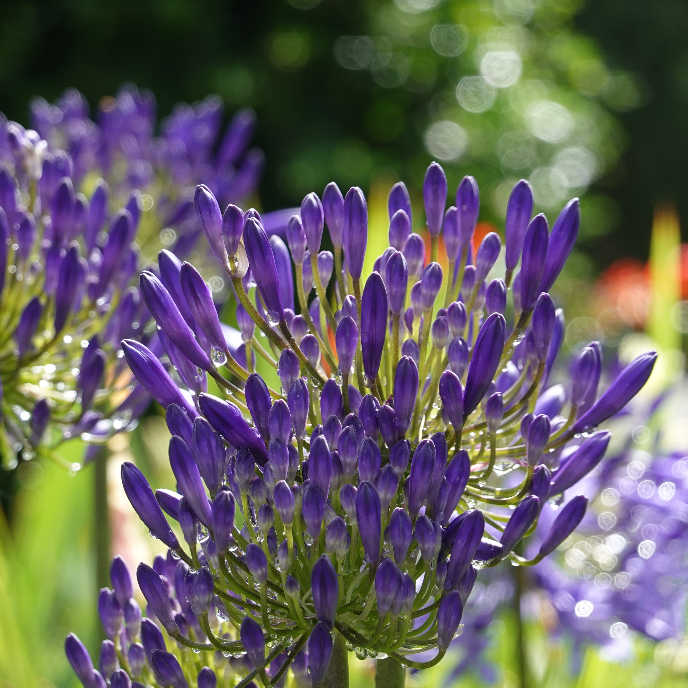
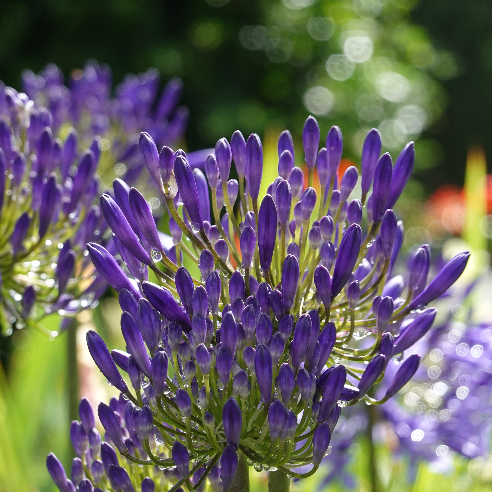

Royal Botanic Gardens Sydney
Ah yes, a botanical garden. Always a good spot to take photos (not so good to steal chips from people though). I’ve always liked hanging out here because I could meet my other bird friends as well. Honestly, I think this is my favourite spot in the city. I can’t wait to show you why. *squawks
Let’s start small.
Flowers
 

Bugs
Bees and spiders and everything nice!

Seagulls
Yes, I have a whole section dedicated to seagulls, and seagulls only!


Other birds
It was also nice to see other bird pals around the garden!
Misc.
Man O’ War Steps near the Sydney Opera House

Random tree
Clouds overlooking the gardens